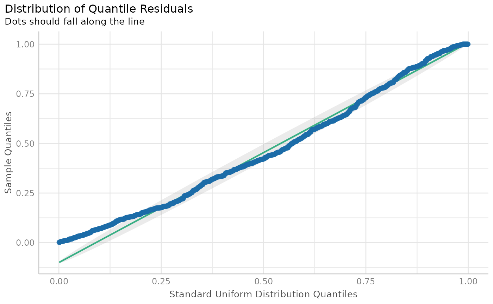

Plot method for check model for (non-)normality of residuals
Source:R/plot.performance_simres.R
plot.see_performance_simres.RdThe plot() method for the performance::check_residuals() resp.
performance::simulate_residuals() function.
Arguments
- x
An object.
- size_line
Numeric value specifying size of line geoms.
- size_point
Numeric specifying size of point-geoms.
- base_size, size_axis_title, size_title
Numeric value specifying size of axis and plot titles.
- alpha
Numeric value specifying alpha level of the confidence bands.
- dot_alpha
Numeric value specifying alpha level of the point geoms.
- colors
Character vector of length two, indicating the colors (in hex-format) for points and line.
- detrend
Logical that decides if Q-Q and P-P plots should be de-trended (also known as worm plots).
- transform
Function to transform the residuals. If
NULL(default), no transformation is applied and uniformly distributed residuals are expected. See argumentquantileFuntionin?DHARMa:::residuals.DHARMafor more details.- style
A ggplot2-theme.
- ...
Arguments passed to or from other methods.
See also
See also the vignette about check_model().
Examples
data(Salamanders, package = "glmmTMB")
model <- glmmTMB::glmmTMB(
count ~ mined + spp + (1 | site),
family = poisson(),
data = Salamanders
)
simulated_residuals <- performance::simulate_residuals(model)
plot(simulated_residuals)

# or
simulated_residuals <- performance::simulate_residuals(model)
result <- performance::check_residuals(simulated_residuals)
plot(result)